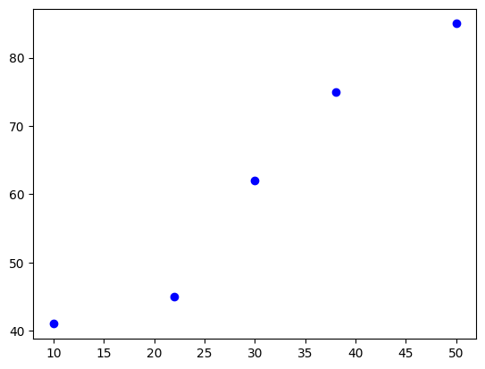
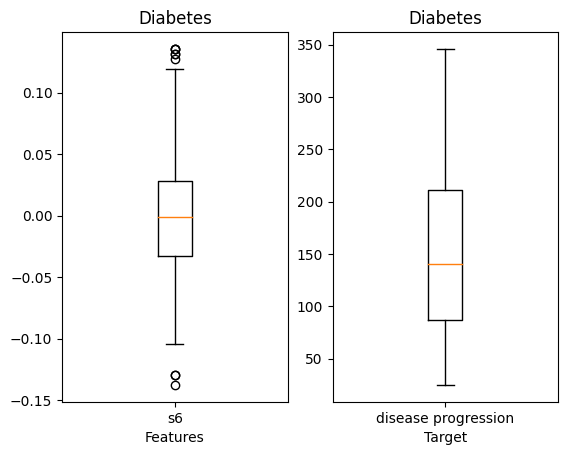
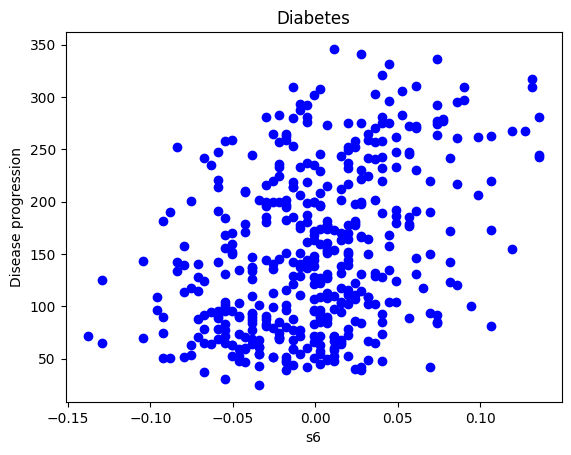
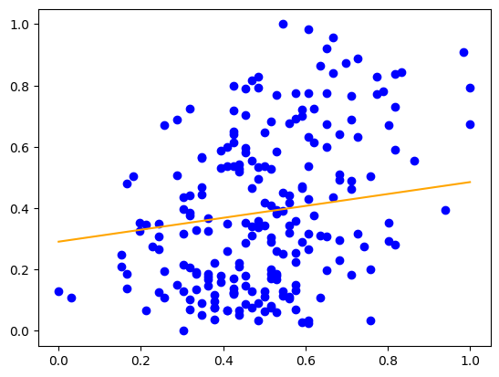
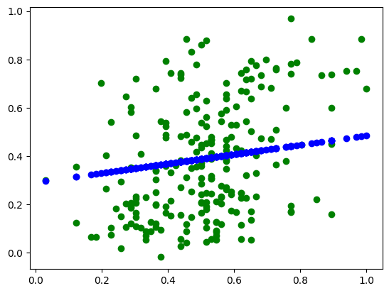

from sklearn.linear_model import SGDRegressor
from sklearn.preprocessing import StandardScaler
from sklearn.model_selection import cross_val_score
import numpy as np
import matplotlib.pyplot as plt경사하강법
경사하강법
ref
경사하강법
\(\widehat y = ax + b\)
1. 패키지 설정
2. 데이터 준비
X_train = np.array([10,22,30,38,50])
y_train = np.array([41,45,62,75,85])3. 탐색적 데이터 분석
plt.scatter(X_train, y_train, color='b')
plt.show()
np.corrcoef(X_train, y_train)array([[1. , 0.97319891],
[0.97319891, 1. ]])4. 피처 스케일링
X_train = X_train.reshape(-1,1) # NX1 매트릭스
print(X_train)
y_train= y_train.reshape(-1,1)
print(y_train)[[10]
[22]
[30]
[38]
[50]]
[[41]
[45]
[62]
[75]
[85]]- 정규화
scalerX=StandardScaler()
scalerX.fit(X_train)
X_train=scalerX.transform(X_train)
print(X_train)[[-1.46805055e+00]
[-5.87220220e-01]
[-8.88178420e-17]
[ 5.87220220e-01]
[ 1.46805055e+00]]scalerY=StandardScaler()
scalerY.fit(y_train)
y_train=scalerY.transform(y_train)
print(y_train)[[-1.21929784]
[-0.98254098]
[ 0.02367569]
[ 0.79313549]
[ 1.38502764]]5. 모형화 및 학습
model=SGDRegressor(verbose=1)model.fit(X_train, y_train)-- Epoch 1
Norm: 0.04, NNZs: 1, Bias: -0.001467, T: 5, Avg. loss: 0.489615
Total training time: 0.00 seconds.
-- Epoch 2
Norm: 0.07, NNZs: 1, Bias: -0.002592, T: 10, Avg. loss: 0.454060
Total training time: 0.00 seconds.
-- Epoch 3
Norm: 0.09, NNZs: 1, Bias: -0.002601, T: 15, Avg. loss: 0.429691
Total training time: 0.00 seconds.
-- Epoch 4
Norm: 0.11, NNZs: 1, Bias: -0.002910, T: 20, Avg. loss: 0.408928
Total training time: 0.00 seconds.
-- Epoch 5
Norm: 0.13, NNZs: 1, Bias: -0.002887, T: 25, Avg. loss: 0.390899
Total training time: 0.00 seconds.
-- Epoch 6
Norm: 0.15, NNZs: 1, Bias: -0.003017, T: 30, Avg. loss: 0.374571
Total training time: 0.00 seconds.
-- Epoch 7
Norm: 0.17, NNZs: 1, Bias: -0.002987, T: 35, Avg. loss: 0.359796
Total training time: 0.00 seconds.
-- Epoch 8
Norm: 0.19, NNZs: 1, Bias: -0.003047, T: 40, Avg. loss: 0.346121
Total training time: 0.00 seconds.
-- Epoch 9
Norm: 0.20, NNZs: 1, Bias: -0.003015, T: 45, Avg. loss: 0.333511
Total training time: 0.00 seconds.
-- Epoch 10
Norm: 0.22, NNZs: 1, Bias: -0.003040, T: 50, Avg. loss: 0.321704
Total training time: 0.00 seconds.
-- Epoch 11
Norm: 0.23, NNZs: 1, Bias: -0.003007, T: 55, Avg. loss: 0.310696
Total training time: 0.00 seconds.
-- Epoch 12
Norm: 0.24, NNZs: 1, Bias: -0.003012, T: 60, Avg. loss: 0.300312
Total training time: 0.00 seconds.
-- Epoch 13
Norm: 0.26, NNZs: 1, Bias: -0.002979, T: 65, Avg. loss: 0.290560
Total training time: 0.00 seconds.
-- Epoch 14
Norm: 0.27, NNZs: 1, Bias: -0.002972, T: 70, Avg. loss: 0.281311
Total training time: 0.00 seconds.
-- Epoch 15
Norm: 0.28, NNZs: 1, Bias: -0.002940, T: 75, Avg. loss: 0.272580
Total training time: 0.00 seconds.
-- Epoch 16
Norm: 0.29, NNZs: 1, Bias: -0.002925, T: 80, Avg. loss: 0.264268
Total training time: 0.00 seconds.
-- Epoch 17
Norm: 0.30, NNZs: 1, Bias: -0.002893, T: 85, Avg. loss: 0.256388
Total training time: 0.00 seconds.
-- Epoch 18
Norm: 0.31, NNZs: 1, Bias: -0.002873, T: 90, Avg. loss: 0.248864
Total training time: 0.00 seconds.
-- Epoch 19
Norm: 0.33, NNZs: 1, Bias: -0.002843, T: 95, Avg. loss: 0.241709
Total training time: 0.00 seconds.
-- Epoch 20
Norm: 0.34, NNZs: 1, Bias: -0.002819, T: 100, Avg. loss: 0.234860
Total training time: 0.00 seconds.
-- Epoch 21
Norm: 0.35, NNZs: 1, Bias: -0.002790, T: 105, Avg. loss: 0.228330
Total training time: 0.00 seconds.
-- Epoch 22
Norm: 0.36, NNZs: 1, Bias: -0.002764, T: 110, Avg. loss: 0.222066
Total training time: 0.00 seconds.
-- Epoch 23
Norm: 0.36, NNZs: 1, Bias: -0.002736, T: 115, Avg. loss: 0.216080
Total training time: 0.00 seconds.
-- Epoch 24
Norm: 0.37, NNZs: 1, Bias: -0.002709, T: 120, Avg. loss: 0.210329
Total training time: 0.00 seconds.
-- Epoch 25
Norm: 0.38, NNZs: 1, Bias: -0.002681, T: 125, Avg. loss: 0.204824
Total training time: 0.00 seconds.
-- Epoch 26
Norm: 0.39, NNZs: 1, Bias: -0.002653, T: 130, Avg. loss: 0.199526
Total training time: 0.00 seconds.
-- Epoch 27
Norm: 0.40, NNZs: 1, Bias: -0.002626, T: 135, Avg. loss: 0.194447
Total training time: 0.00 seconds.
-- Epoch 28
Norm: 0.41, NNZs: 1, Bias: -0.002598, T: 140, Avg. loss: 0.189553
Total training time: 0.00 seconds.
-- Epoch 29
Norm: 0.42, NNZs: 1, Bias: -0.002572, T: 145, Avg. loss: 0.184854
Total training time: 0.00 seconds.
-- Epoch 30
Norm: 0.42, NNZs: 1, Bias: -0.002543, T: 150, Avg. loss: 0.180321
Total training time: 0.00 seconds.
-- Epoch 31
Norm: 0.43, NNZs: 1, Bias: -0.002518, T: 155, Avg. loss: 0.175964
Total training time: 0.00 seconds.
-- Epoch 32
Norm: 0.44, NNZs: 1, Bias: -0.002489, T: 160, Avg. loss: 0.171756
Total training time: 0.00 seconds.
-- Epoch 33
Norm: 0.45, NNZs: 1, Bias: -0.002465, T: 165, Avg. loss: 0.167707
Total training time: 0.00 seconds.
-- Epoch 34
Norm: 0.45, NNZs: 1, Bias: -0.002436, T: 170, Avg. loss: 0.163793
Total training time: 0.00 seconds.
-- Epoch 35
Norm: 0.46, NNZs: 1, Bias: -0.002413, T: 175, Avg. loss: 0.160023
Total training time: 0.00 seconds.
-- Epoch 36
Norm: 0.47, NNZs: 1, Bias: -0.002385, T: 180, Avg. loss: 0.156377
Total training time: 0.00 seconds.
-- Epoch 37
Norm: 0.48, NNZs: 1, Bias: -0.002361, T: 185, Avg. loss: 0.152861
Total training time: 0.00 seconds.
-- Epoch 38
Norm: 0.48, NNZs: 1, Bias: -0.002334, T: 190, Avg. loss: 0.149458
Total training time: 0.00 seconds.
-- Epoch 39
Norm: 0.49, NNZs: 1, Bias: -0.002311, T: 195, Avg. loss: 0.146173
Total training time: 0.00 seconds.
-- Epoch 40
Norm: 0.50, NNZs: 1, Bias: -0.002284, T: 200, Avg. loss: 0.142992
Total training time: 0.00 seconds.
-- Epoch 41
Norm: 0.50, NNZs: 1, Bias: -0.002262, T: 205, Avg. loss: 0.139920
Total training time: 0.00 seconds.
-- Epoch 42
Norm: 0.51, NNZs: 1, Bias: -0.002236, T: 210, Avg. loss: 0.136943
Total training time: 0.00 seconds.
-- Epoch 43
Norm: 0.51, NNZs: 1, Bias: -0.002214, T: 215, Avg. loss: 0.134066
Total training time: 0.00 seconds.
-- Epoch 44
Norm: 0.52, NNZs: 1, Bias: -0.002188, T: 220, Avg. loss: 0.131275
Total training time: 0.00 seconds.
-- Epoch 45
Norm: 0.53, NNZs: 1, Bias: -0.002168, T: 225, Avg. loss: 0.128577
Total training time: 0.00 seconds.
-- Epoch 46
Norm: 0.53, NNZs: 1, Bias: -0.002142, T: 230, Avg. loss: 0.125959
Total training time: 0.00 seconds.
-- Epoch 47
Norm: 0.54, NNZs: 1, Bias: -0.002122, T: 235, Avg. loss: 0.123425
Total training time: 0.00 seconds.
-- Epoch 48
Norm: 0.54, NNZs: 1, Bias: -0.002097, T: 240, Avg. loss: 0.120966
Total training time: 0.00 seconds.
-- Epoch 49
Norm: 0.55, NNZs: 1, Bias: -0.002077, T: 245, Avg. loss: 0.118586
Total training time: 0.00 seconds.
-- Epoch 50
Norm: 0.55, NNZs: 1, Bias: -0.002053, T: 250, Avg. loss: 0.116273
Total training time: 0.00 seconds.
-- Epoch 51
Norm: 0.56, NNZs: 1, Bias: -0.002034, T: 255, Avg. loss: 0.114034
Total training time: 0.00 seconds.
-- Epoch 52
Norm: 0.56, NNZs: 1, Bias: -0.002010, T: 260, Avg. loss: 0.111858
Total training time: 0.00 seconds.
-- Epoch 53
Norm: 0.57, NNZs: 1, Bias: -0.001992, T: 265, Avg. loss: 0.109749
Total training time: 0.00 seconds.
-- Epoch 54
Norm: 0.57, NNZs: 1, Bias: -0.001968, T: 270, Avg. loss: 0.107699
Total training time: 0.00 seconds.
-- Epoch 55
Norm: 0.58, NNZs: 1, Bias: -0.001950, T: 275, Avg. loss: 0.105712
Total training time: 0.00 seconds.
-- Epoch 56
Norm: 0.58, NNZs: 1, Bias: -0.001927, T: 280, Avg. loss: 0.103779
Total training time: 0.00 seconds.
-- Epoch 57
Norm: 0.59, NNZs: 1, Bias: -0.001910, T: 285, Avg. loss: 0.101905
Total training time: 0.00 seconds.
-- Epoch 58
Norm: 0.59, NNZs: 1, Bias: -0.001887, T: 290, Avg. loss: 0.100081
Total training time: 0.00 seconds.
-- Epoch 59
Norm: 0.60, NNZs: 1, Bias: -0.001870, T: 295, Avg. loss: 0.098312
Total training time: 0.00 seconds.
-- Epoch 60
Norm: 0.60, NNZs: 1, Bias: -0.001849, T: 300, Avg. loss: 0.096591
Total training time: 0.00 seconds.
-- Epoch 61
Norm: 0.61, NNZs: 1, Bias: -0.001832, T: 305, Avg. loss: 0.094920
Total training time: 0.00 seconds.
-- Epoch 62
Norm: 0.61, NNZs: 1, Bias: -0.001811, T: 310, Avg. loss: 0.093293
Total training time: 0.00 seconds.
-- Epoch 63
Norm: 0.62, NNZs: 1, Bias: -0.001795, T: 315, Avg. loss: 0.091713
Total training time: 0.00 seconds.
-- Epoch 64
Norm: 0.62, NNZs: 1, Bias: -0.001774, T: 320, Avg. loss: 0.090175
Total training time: 0.00 seconds.
-- Epoch 65
Norm: 0.62, NNZs: 1, Bias: -0.001758, T: 325, Avg. loss: 0.088681
Total training time: 0.00 seconds.
-- Epoch 66
Norm: 0.63, NNZs: 1, Bias: -0.001738, T: 330, Avg. loss: 0.087226
Total training time: 0.00 seconds.
-- Epoch 67
Norm: 0.63, NNZs: 1, Bias: -0.001723, T: 335, Avg. loss: 0.085812
Total training time: 0.00 seconds.
-- Epoch 68
Norm: 0.64, NNZs: 1, Bias: -0.001703, T: 340, Avg. loss: 0.084435
Total training time: 0.00 seconds.
-- Epoch 69
Norm: 0.64, NNZs: 1, Bias: -0.001688, T: 345, Avg. loss: 0.083096
Total training time: 0.00 seconds.
-- Epoch 70
Norm: 0.64, NNZs: 1, Bias: -0.001669, T: 350, Avg. loss: 0.081791
Total training time: 0.00 seconds.
-- Epoch 71
Norm: 0.65, NNZs: 1, Bias: -0.001654, T: 355, Avg. loss: 0.080522
Total training time: 0.00 seconds.
-- Epoch 72
Norm: 0.65, NNZs: 1, Bias: -0.001635, T: 360, Avg. loss: 0.079286
Total training time: 0.00 seconds.
-- Epoch 73
Norm: 0.65, NNZs: 1, Bias: -0.001621, T: 365, Avg. loss: 0.078083
Total training time: 0.00 seconds.
-- Epoch 74
Norm: 0.66, NNZs: 1, Bias: -0.001603, T: 370, Avg. loss: 0.076910
Total training time: 0.00 seconds.
-- Epoch 75
Norm: 0.66, NNZs: 1, Bias: -0.001589, T: 375, Avg. loss: 0.075769
Total training time: 0.00 seconds.
-- Epoch 76
Norm: 0.67, NNZs: 1, Bias: -0.001571, T: 380, Avg. loss: 0.074657
Total training time: 0.00 seconds.
-- Epoch 77
Norm: 0.67, NNZs: 1, Bias: -0.001558, T: 385, Avg. loss: 0.073574
Total training time: 0.00 seconds.
-- Epoch 78
Norm: 0.67, NNZs: 1, Bias: -0.001540, T: 390, Avg. loss: 0.072518
Total training time: 0.00 seconds.
-- Epoch 79
Norm: 0.68, NNZs: 1, Bias: -0.001527, T: 395, Avg. loss: 0.071490
Total training time: 0.00 seconds.
-- Epoch 80
Norm: 0.68, NNZs: 1, Bias: -0.001510, T: 400, Avg. loss: 0.070487
Total training time: 0.00 seconds.
-- Epoch 81
Norm: 0.68, NNZs: 1, Bias: -0.001497, T: 405, Avg. loss: 0.069511
Total training time: 0.00 seconds.
-- Epoch 82
Norm: 0.69, NNZs: 1, Bias: -0.001480, T: 410, Avg. loss: 0.068558
Total training time: 0.00 seconds.
-- Epoch 83
Norm: 0.69, NNZs: 1, Bias: -0.001468, T: 415, Avg. loss: 0.067630
Total training time: 0.00 seconds.
-- Epoch 84
Norm: 0.69, NNZs: 1, Bias: -0.001452, T: 420, Avg. loss: 0.066725
Total training time: 0.00 seconds.
-- Epoch 85
Norm: 0.69, NNZs: 1, Bias: -0.001440, T: 425, Avg. loss: 0.065843
Total training time: 0.00 seconds.
Convergence after 85 epochs took 0.00 seconds/home/coco/anaconda3/envs/py38/lib/python3.8/site-packages/sklearn/utils/validation.py:1143: DataConversionWarning: A column-vector y was passed when a 1d array was expected. Please change the shape of y to (n_samples, ), for example using ravel().
y = column_or_1d(y, warn=True)SGDRegressor(verbose=1)In a Jupyter environment, please rerun this cell to show the HTML representation or trust the notebook.
On GitHub, the HTML representation is unable to render, please try loading this page with nbviewer.org.
SGDRegressor(verbose=1)
6.예측
X_test = np.array([45]).reshape(-1,1)
X_test=scalerX.transform(X_test)
X_testarray([[45.]])y_pred=model.predict(X_test)
print(y_pred)[31.27270054]y_pred_inverse=scalerY.inverse_transform(y_pred)
print(y_pred_inverse)당뇨병 진단
1. 패키지 설정
from sklearn.linear_model import SGDRegressor
from sklearn.preprocessing import MinMaxScaler
from sklearn.model_selection import cross_val_score
from sklearn.metrics import mean_squared_error
from sklearn.model_selection import train_test_split
from sklearn import datasets
import numpy as np
import matplotlib.pyplot as plt
import pandas as pd2.데이터 준비
diabetes_X, diabetes_y = datasets.load_diabetes(return_X_y=True)print(np.shape(diabetes_X))
print(np.shape(diabetes_y))(442, 10)
(442,)print(diabetes_X)[[ 0.03807591 0.05068012 0.06169621 ... -0.00259226 0.01990749
-0.01764613]
[-0.00188202 -0.04464164 -0.05147406 ... -0.03949338 -0.06833155
-0.09220405]
[ 0.08529891 0.05068012 0.04445121 ... -0.00259226 0.00286131
-0.02593034]
...
[ 0.04170844 0.05068012 -0.01590626 ... -0.01107952 -0.04688253
0.01549073]
[-0.04547248 -0.04464164 0.03906215 ... 0.02655962 0.04452873
-0.02593034]
[-0.04547248 -0.04464164 -0.0730303 ... -0.03949338 -0.00422151
0.00306441]]print(diabetes_y)[151. 75. 141. 206. 135. 97. 138. 63. 110. 310. 101. 69. 179. 185.
118. 171. 166. 144. 97. 168. 68. 49. 68. 245. 184. 202. 137. 85.
131. 283. 129. 59. 341. 87. 65. 102. 265. 276. 252. 90. 100. 55.
61. 92. 259. 53. 190. 142. 75. 142. 155. 225. 59. 104. 182. 128.
52. 37. 170. 170. 61. 144. 52. 128. 71. 163. 150. 97. 160. 178.
48. 270. 202. 111. 85. 42. 170. 200. 252. 113. 143. 51. 52. 210.
65. 141. 55. 134. 42. 111. 98. 164. 48. 96. 90. 162. 150. 279.
92. 83. 128. 102. 302. 198. 95. 53. 134. 144. 232. 81. 104. 59.
246. 297. 258. 229. 275. 281. 179. 200. 200. 173. 180. 84. 121. 161.
99. 109. 115. 268. 274. 158. 107. 83. 103. 272. 85. 280. 336. 281.
118. 317. 235. 60. 174. 259. 178. 128. 96. 126. 288. 88. 292. 71.
197. 186. 25. 84. 96. 195. 53. 217. 172. 131. 214. 59. 70. 220.
268. 152. 47. 74. 295. 101. 151. 127. 237. 225. 81. 151. 107. 64.
138. 185. 265. 101. 137. 143. 141. 79. 292. 178. 91. 116. 86. 122.
72. 129. 142. 90. 158. 39. 196. 222. 277. 99. 196. 202. 155. 77.
191. 70. 73. 49. 65. 263. 248. 296. 214. 185. 78. 93. 252. 150.
77. 208. 77. 108. 160. 53. 220. 154. 259. 90. 246. 124. 67. 72.
257. 262. 275. 177. 71. 47. 187. 125. 78. 51. 258. 215. 303. 243.
91. 150. 310. 153. 346. 63. 89. 50. 39. 103. 308. 116. 145. 74.
45. 115. 264. 87. 202. 127. 182. 241. 66. 94. 283. 64. 102. 200.
265. 94. 230. 181. 156. 233. 60. 219. 80. 68. 332. 248. 84. 200.
55. 85. 89. 31. 129. 83. 275. 65. 198. 236. 253. 124. 44. 172.
114. 142. 109. 180. 144. 163. 147. 97. 220. 190. 109. 191. 122. 230.
242. 248. 249. 192. 131. 237. 78. 135. 244. 199. 270. 164. 72. 96.
306. 91. 214. 95. 216. 263. 178. 113. 200. 139. 139. 88. 148. 88.
243. 71. 77. 109. 272. 60. 54. 221. 90. 311. 281. 182. 321. 58.
262. 206. 233. 242. 123. 167. 63. 197. 71. 168. 140. 217. 121. 235.
245. 40. 52. 104. 132. 88. 69. 219. 72. 201. 110. 51. 277. 63.
118. 69. 273. 258. 43. 198. 242. 232. 175. 93. 168. 275. 293. 281.
72. 140. 189. 181. 209. 136. 261. 113. 131. 174. 257. 55. 84. 42.
146. 212. 233. 91. 111. 152. 120. 67. 310. 94. 183. 66. 173. 72.
49. 64. 48. 178. 104. 132. 220. 57.]- 10열(s6-혈당수치) 할당
X_data= diabetes_X[:,9]
print(X_data)[-0.01764613 -0.09220405 -0.02593034 -0.00936191 -0.04664087 -0.09634616
-0.03835666 0.00306441 0.01134862 -0.01350402 -0.03421455 -0.05906719
-0.04249877 -0.01350402 -0.07563562 -0.04249877 0.02791705 -0.0010777
-0.01764613 -0.05492509 0.01549073 -0.01764613 -0.01350402 0.13561183
-0.05492509 -0.03421455 -0.0052198 0.04034337 -0.05492509 0.05276969
-0.00936191 -0.04249877 0.02791705 0.00306441 -0.06735141 0.01963284
-0.02593034 -0.0052198 0.02377494 0.00306441 0.09419076 -0.00936191
-0.03421455 0.07348023 -0.01764613 -0.05078298 -0.08806194 -0.08391984
-0.02178823 -0.01350402 0.00720652 -0.02178823 -0.01350402 0.04862759
0.00720652 0.00720652 -0.01764613 -0.06735141 -0.05078298 0.01963284
-0.03421455 0.01963284 -0.02593034 -0.07149352 0.01134862 0.01549073
0.01963284 0.00306441 0.00306441 0.01963284 0.04034337 0.06105391
-0.01764613 -0.00936191 0.07348023 0.02791705 0.01549073 -0.0010777
-0.08391984 -0.02593034 -0.0052198 -0.0010777 -0.07977773 -0.04249877
-0.12948301 -0.07149352 -0.03421455 -0.03835666 0.06933812 0.01963284
0.01134862 0.01963284 0.01134862 -0.05492509 -0.09220405 -0.0052198
0.03205916 0.07762233 -0.06735141 -0.05492509 -0.0010777 0.03620126
-0.0010777 -0.03007245 -0.0632093 0.01963284 -0.08391984 -0.0052198
0.04034337 0.10661708 0.01549073 -0.04664087 0.00306441 0.09004865
0.02377494 0.00306441 0.02791705 0.13561183 0.0569118 0.02791705
-0.02178823 0.01134862 0.04862759 0.07348023 -0.01350402 0.00720652
-0.05492509 -0.09634616 -0.07149352 0.1190434 0.07348023 -0.07977773
0.02377494 -0.03007245 -0.04664087 0.0569118 -0.02178823 -0.01350402
0.07348023 -0.0052198 0.01549073 0.13146972 -0.0010777 -0.04249877
0.00720652 -0.05078298 0.00720652 0.04034337 -0.0010777 -0.03835666
-0.00936191 -0.01350402 0.07348023 0.01134862 0.00306441 0.04862759
-0.03421455 0.02791705 -0.05078298 -0.01764613 -0.04664087 0.08590655
-0.0010777 0.06105391 -0.01350402 -0.01350402 -0.10463037 0.10661708
0.12732762 0.01963284 -0.01764613 -0.04664087 0.08590655 -0.05492509
0.00720652 0.00306441 0.01963284 0.03205916 -0.03007245 -0.00936191
-0.0010777 -0.0632093 -0.00936191 0.0569118 0.03205916 -0.01764613
-0.03835666 -0.10463037 -0.00936191 -0.02593034 -0.0052198 -0.00936191
-0.05906719 0.01963284 0.02377494 0.02377494 0.01134862 0.03620126
-0.05906719 0.00720652 0.04448548 0.02791705 -0.03007245 0.02791705
0.07762233 -0.02593034 0.00306441 0.03620126 0.1190434 -0.01350402
-0.05906719 -0.02178823 0.01963284 0.00720652 -0.05492509 0.10661708
0.04862759 0.04448548 -0.01350402 -0.03007245 -0.06735141 -0.03835666
0.01963284 -0.05078298 -0.00936191 0.00306441 -0.05492509 0.00720652
-0.05078298 0.01134862 0.06933812 0.01134862 0.03205916 -0.03835666
0.0569118 0.04862759 0.01134862 -0.0010777 -0.02178823 0.04862759
0.01963284 0.0569118 -0.07149352 -0.04249877 -0.0052198 -0.12948301
-0.05906719 -0.09220405 0.04034337 0.00720652 0.03620126 0.04034337
-0.03007245 0.06933812 0.09004865 0.00720652 0.01134862 -0.05078298
0.0569118 0.00720652 -0.01764613 0.01549073 0.00306441 -0.01764613
-0.02178823 0.04034337 0.00306441 0.02791705 0.07348023 -0.03835666
0.01549073 0.00720652 -0.09220405 0.03620126 0.01549073 0.06933812
-0.02178823 0.01549073 0.03205916 -0.02593034 -0.01764613 0.00306441
0.02791705 -0.03007245 -0.05492509 -0.02178823 -0.0052198 -0.0052198
-0.01764613 -0.03421455 0.04448548 -0.05906719 -0.03835666 -0.0010777
-0.03421455 0.00306441 -0.05906719 -0.05492509 -0.01350402 -0.0010777
0.04448548 0.03620126 0.02791705 -0.02178823 -0.01350402 -0.06735141
-0.01350402 0.08176444 -0.07977773 0.08176444 0.03205916 0.02377494
-0.03007245 -0.0010777 -0.03835666 -0.0010777 0.04034337 0.06933812
0.03205916 0.06105391 0.00306441 0.06105391 0.08176444 0.0569118
0.01963284 0.04862759 0.02791705 -0.0052198 0.01963284 0.04448548
0.01549073 -0.0052198 0.03620126 0.03205916 -0.05492509 -0.05906719
0.05276969 0.00306441 -0.05906719 0.01549073 -0.03007245 -0.01764613
0.02377494 0.00720652 -0.03007245 -0.0010777 0.01549073 -0.03007245
-0.0010777 -0.07149352 0.13561183 -0.04249877 -0.03835666 0.00306441
0.06105391 0.01134862 -0.07563562 -0.05906719 -0.04664087 0.06105391
0.04034337 0.02377494 0.04034337 0.01134862 0.09833287 0.09833287
0.04862759 0.03205916 0.08176444 0.02791705 -0.07563562 -0.01764613
-0.02178823 -0.0010777 -0.07977773 0.01963284 -0.0010777 -0.0632093
-0.03835666 0.02377494 -0.02593034 -0.05492509 0.03620126 0.00720652
-0.03835666 -0.01350402 0.00306441 -0.07563562 -0.03835666 -0.08806194
0.07348023 -0.05078298 0.06519601 -0.02178823 0.00720652 -0.05492509
-0.03421455 0.02377494 -0.06735141 0.01963284 -0.00936191 0.04034337
0.04448548 0.04034337 -0.00936191 -0.03007245 -0.13776723 0.01963284
0.04034337 -0.0052198 -0.04249877 -0.02593034 0.08590655 0.01963284
0.00720652 0.00306441 0.03620126 0.00306441 0.00720652 -0.0052198
0.06105391 0.01549073 -0.00936191 -0.04664087 0.02377494 -0.05078298
0.08590655 0.03205916 0.13146972 -0.03835666 -0.01764613 -0.0010777
0.10661708 -0.00936191 0.03205916 -0.03835666 -0.04664087 0.00720652
0.04448548 0.01549073 -0.02593034 0.00306441]3.탐색적 데이터 분석
#입력데이터의 박스플롯
g1=plt.subplot(1,2,1)
g1.boxplot(X_data, labels=['s6'])
plt.title('Diabetes')
plt.xlabel('Features')
g2=plt.subplot(1,2,2)
g2.boxplot(diabetes_y, labels=['disease progression'])
plt.title('Diabetes')
plt.xlabel('Target')
plt.show()
plt.scatter(X_data, diabetes_y, color='b')
plt.title('Diabetes')
plt.xlabel('s6')
plt.ylabel('Disease progression')
plt.show()
np.corrcoef(X_data,diabetes_y)array([[1. , 0.38248348],
[0.38248348, 1. ]])4.데이터 분리
X_train, X_test, y_train, y_test = train_test_split(X_data,diabetes_y,
test_size=0.5, random_state=1234)5.피처 스케일링
# 학습 데이터 정규화
# 2차원 행렬 변환
X_train = X_train.reshape(-1,1)
y_train = y_train.reshape(-1,1)
# 입력 데이터 정규화
scalerX=MinMaxScaler()
scalerX.fit(X_train)
X_train_scaled = scalerX.transform(X_train)
# 목표 데이터 정규화
scalerY=MinMaxScaler()
scalerY.fit(y_train)
y_train_scaled = scalerY.transform(y_train)# 테스트 데이터 정규화
X_test = X_test.reshape(-1,1)
y_test = y_test.reshape(-1,1)
# 학습용 데이터의 정규화 스케일에 맞추어 입력과 목표 데이터를 정규화
X_test_scaled=scalerX.transform(X_test)
y_test_scaled=scalerY.transform(y_test)6.모형화 및 학습
model = SGDRegressor(verbose=1)model.fit(X_train_scaled, y_train_scaled)-- Epoch 1
Norm: 0.11, NNZs: 1, Bias: 0.188126, T: 221, Avg. loss: 0.058981
Total training time: 0.00 seconds.
-- Epoch 2
Norm: 0.14, NNZs: 1, Bias: 0.242482, T: 442, Avg. loss: 0.035508
Total training time: 0.00 seconds.
-- Epoch 3
Norm: 0.16, NNZs: 1, Bias: 0.268429, T: 663, Avg. loss: 0.030988
Total training time: 0.00 seconds.
-- Epoch 4
Norm: 0.17, NNZs: 1, Bias: 0.280449, T: 884, Avg. loss: 0.029699
Total training time: 0.00 seconds.
-- Epoch 5
Norm: 0.18, NNZs: 1, Bias: 0.285992, T: 1105, Avg. loss: 0.029280
Total training time: 0.00 seconds.
-- Epoch 6
Norm: 0.18, NNZs: 1, Bias: 0.290268, T: 1326, Avg. loss: 0.029095
Total training time: 0.00 seconds.
-- Epoch 7
Norm: 0.19, NNZs: 1, Bias: 0.291204, T: 1547, Avg. loss: 0.028998
Total training time: 0.00 seconds.
-- Epoch 8
Norm: 0.19, NNZs: 1, Bias: 0.291239, T: 1768, Avg. loss: 0.028947
Total training time: 0.00 seconds.
-- Epoch 9
Norm: 0.19, NNZs: 1, Bias: 0.290878, T: 1989, Avg. loss: 0.028905
Total training time: 0.00 seconds.
Convergence after 9 epochs took 0.00 seconds/home/coco/anaconda3/envs/py38/lib/python3.8/site-packages/sklearn/utils/validation.py:1143: DataConversionWarning: A column-vector y was passed when a 1d array was expected. Please change the shape of y to (n_samples, ), for example using ravel().
y = column_or_1d(y, warn=True)SGDRegressor(verbose=1)In a Jupyter environment, please rerun this cell to show the HTML representation or trust the notebook.
On GitHub, the HTML representation is unable to render, please try loading this page with nbviewer.org.
SGDRegressor(verbose=1)
print('y절편:', model.intercept_)
print('기울기:', model.coef_)y절편: [0.29087809]
기울기: [0.19422995]plt.scatter(X_train_scaled, y_train_scaled, color='b')
x=np.array([min(X_train_scaled),max(X_train_scaled)])
y=model.coef_*x+model.intercept_
plt.plot(x,y,c='orange', label='regression line')
plt.show()
7.예측
# 테스트 데이터 예측
y_pred=model.predict(X_test_scaled)
# 테스트 데이터 실제 값
plt.scatter(X_test_scaled, y_test_scaled, color='g')
# 테스트 데이터 예측 값
plt.scatter(X_test_scaled, y_pred, color='b')
plt.show()
# 예측 값의 역변환(실제 스케일)
y_pred = y_pred.reshape(-1,1)
y_pred_inverse = scalerY.inverse_transform(y_pred)